| 日付 | 2023年8月11日（金） |
|---|---|
| 山域 | 尾瀬 |
| メンバー | 単独 |
| 山行形態 | 日帰り |
| アクセス | 車 |
| ルート (Map) | 湯の小屋温泉 (9:00) - (10:38) ワラビ平 - (11:32) 咲倉沢頭避難小屋 - (13:03) 尾瀬笠ヶ岳 (13:27) - (14:32) 咲倉沢頭避難小屋 - (15:09) ワラビ平 - (16:30) 湯の小屋温泉 |
本日から夏季休暇。8/13まで子供の予定があるため、本日も単独行。
目的地は尾瀬笠ヶ岳。尾瀬のはずれにあるマイナーピークで
前々から行ってみたいと思っていた一峰だ。
湯の小屋温泉近くの路肩に車を停める。標高790m。
お盆休み初日で道路は大渋滞。ここまで4時間半かかってしまった。
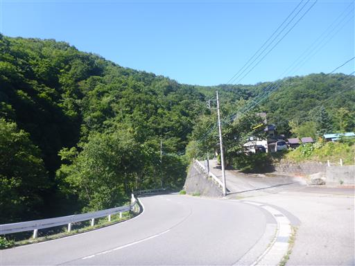
車道を歩いて登山口に到着。ようやく笠ヶ岳の標識を見つける。
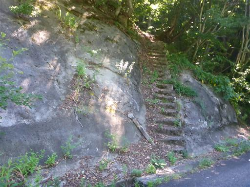
樹林帯の中をしばらく登ると伐採地に到着。
中央の三角形が目指す笠ヶ岳。はるか遠くに見える。
左のピークは至仏山だ。
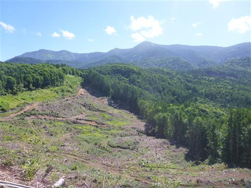
笠ヶ岳の勇姿。思った以上に立派な山だ。
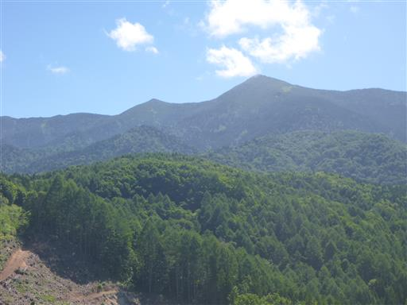
至仏山。やはり至仏山は尾瀬ヶ原から眺めるのが一番美しい。
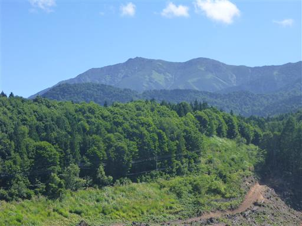
伐採地を過ぎると林道歩き。長くは続かないが非常に暑い。
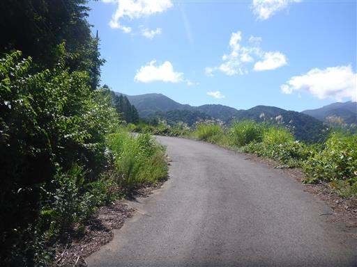
ゲートを通り過ぎる。この林道まで車で来ると楽そうだ。
帰って山行記録を調べると、そのようなルートを取っている人もいた。
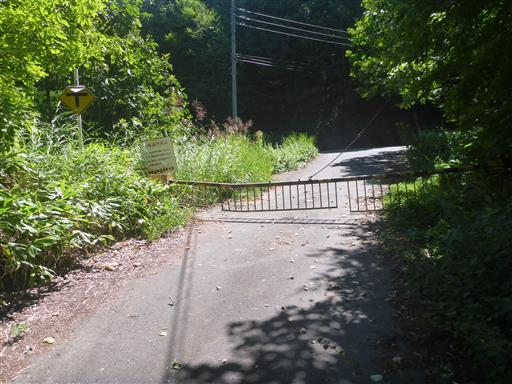
林道から再び登山道に入っていく。
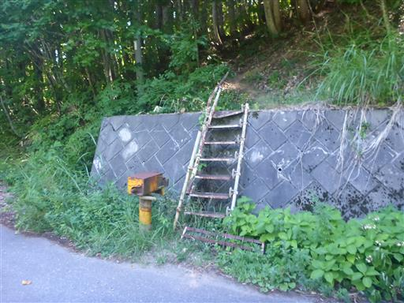
ここからは延々と続く樹林帯歩き。小刻みなアップダウンがどこまでも続く。
展望は広がらないが、直射日光が無いのはありがたい。
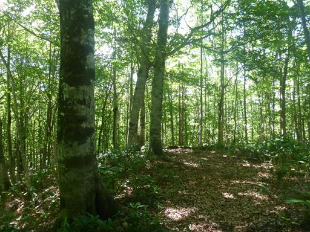
斜面が少し崩落している。
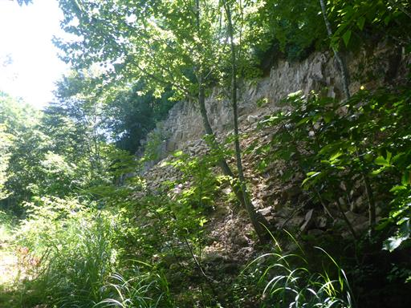
ワラビ平に到着。ここでワラビが取れるのだろうか？
見るからに暑そうな景色。実際に暑い。

火の用心。三山工業の人で、ここに標識があることを把握している人はいるのだろうか？
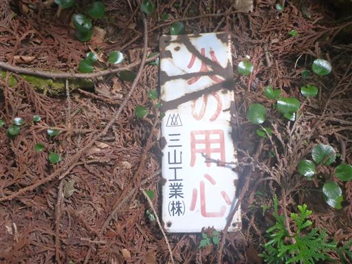
傾斜がきつくなってきて、初めての本格的な登りになる。
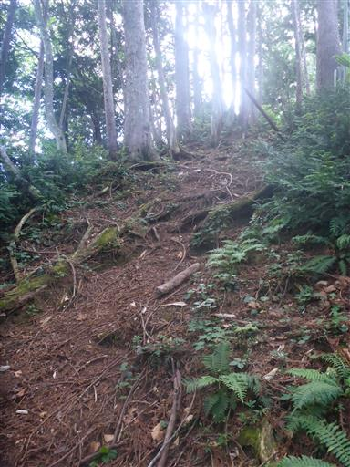
木の根元だけやたら太い木。
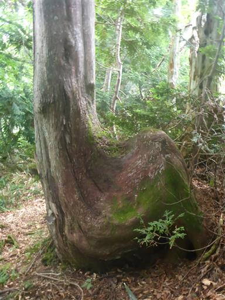
咲倉沢頭避難小屋に到着。
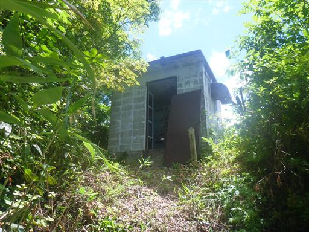
中は小屋というより倉庫という感じ。
扉も壊れているし、緊急時に無いよりましという程度の避難小屋だ。
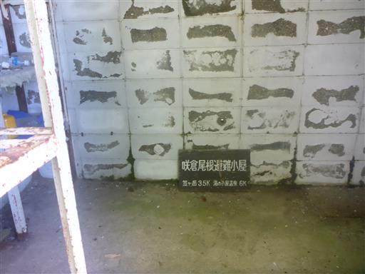
なぜか梯子が立てかけられている。展望台を兼ねているのだろうか？
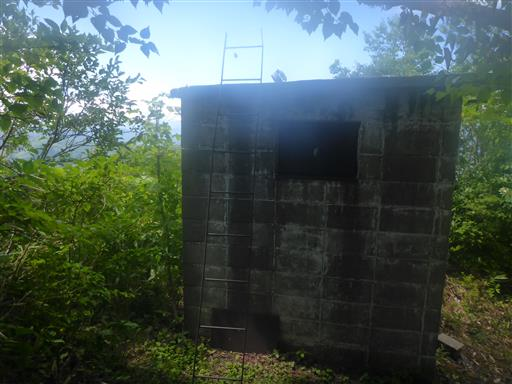
朝は快晴だった上州武尊山は雲に覆われ始めている。
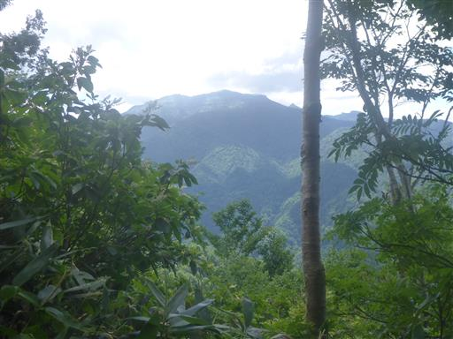
ヘビを発見。恐らくマムシだろう。
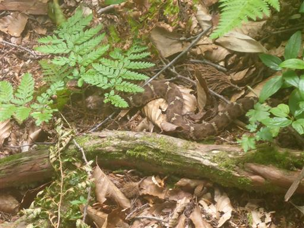
木の間から笠ヶ岳が見える。だいぶ雲が出てきている。
今日は風が少なくそんなに雲は湧いていないが、少しずつ雲の量が増えている。
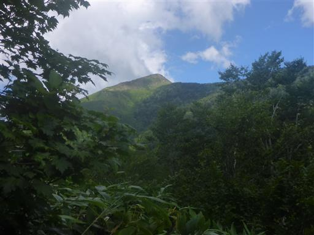
道を塞ぐ巨大な倒木。

巨大なキノコ。
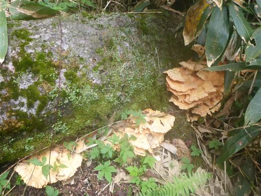
再び倒木。枝があって乗り越えるのが大変だ。
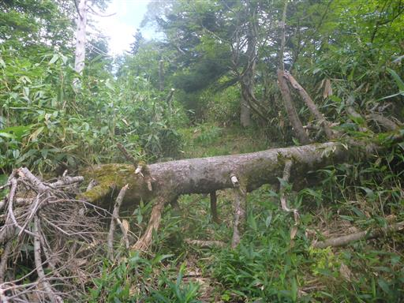
尾根道なのに、小さな沢を何度か横切る。
尾根がだいぶ広くなってきているのだろう。
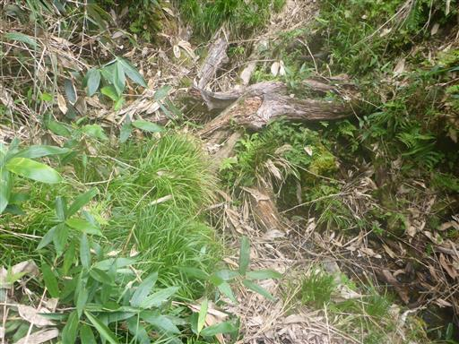
傾斜が緩んでくると、ぬかるんだ場所が多くなる。
歩く人が少ないからか、それほどひどい状態にはなっていない。
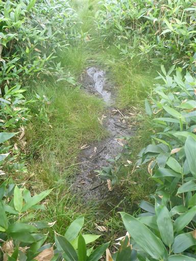
池塘。青空を映していて美しい。
長い長い登山道を歩き、ようやく景色に変化が訪れる。
ここから山頂までは頑張って歩いたご褒美タイムだ。
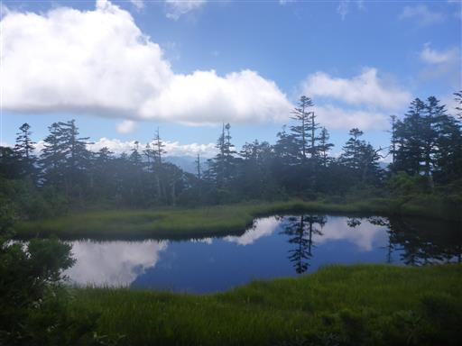
こちらは傾斜湿原。水は溜まっていないが、初夏には湿原植物が花を咲かせそうだ。
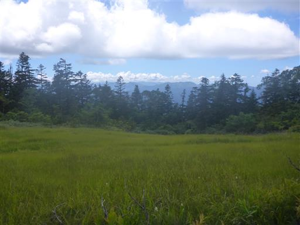
片藤沼に到着。草付きの平坦地はかなりぬかるんでいる。
背後に笠ヶ岳が見えている。あと僅かだ。
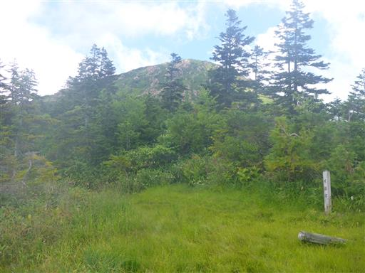
片藤沼。トンボが飛び交う静かな池だ。左手に燧ヶ岳が見えている。
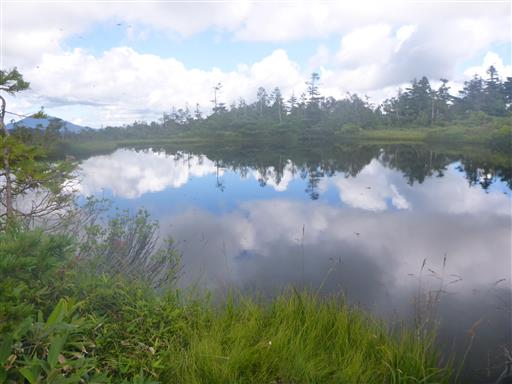
片藤沼を過ぎるとすぐに笠ヶ岳の足元に到着する。
ここからは岩が露出した斜面を登って行く。
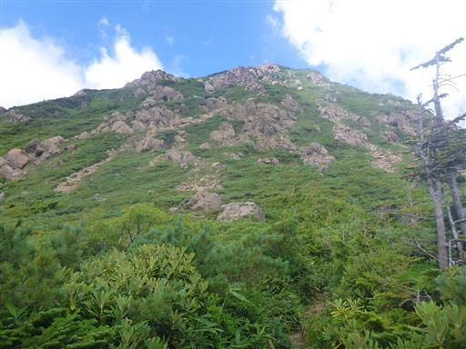
これまで花など全くなかったのに、最後の登りになって急に様々な花が姿を現す。
黄色い花はキンロバイだろうか。
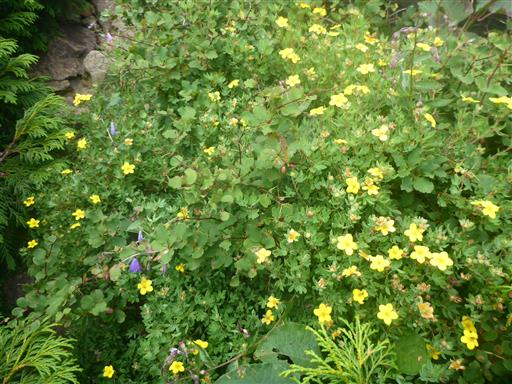
この辺りはホソバヒナウスユキソウが咲くようだ。
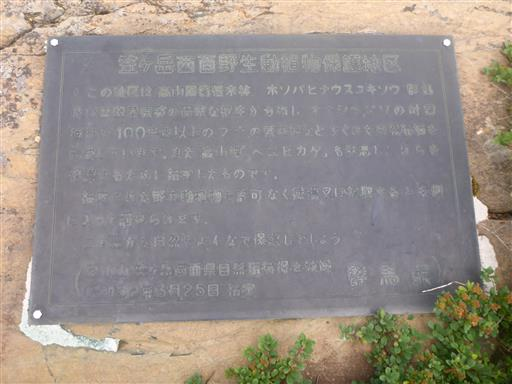
至仏山と同じ蛇紋岩でできた山なのだろう。
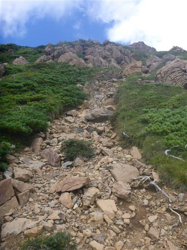
ウスユキソウの残骸が一輪だけ咲いている。
これがホソバヒナウスユキソウなのだろうか？
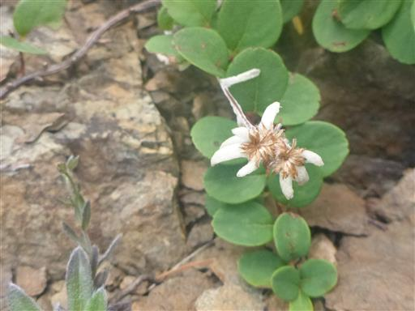
振返ると、片藤沼のある広い尾根、その向こうに上州武尊山が見える。
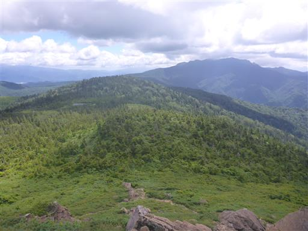
イブキジャコウソウ。
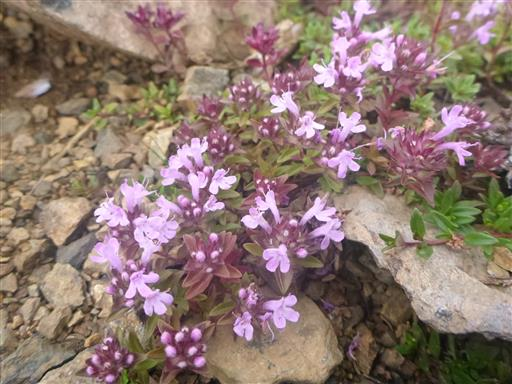
タカネトウウチソウ。
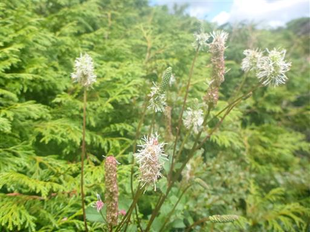
ヒメシャジン。
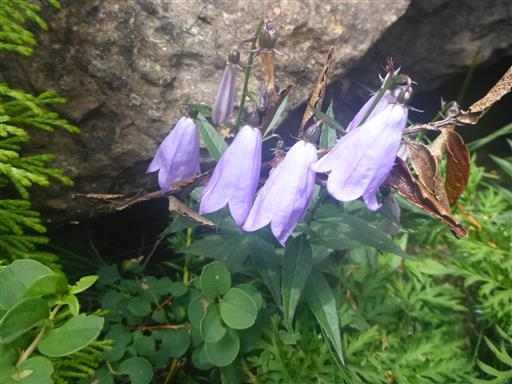
笠ヶ岳山頂に到着。標高2057m。
長い長い山道だった。登りはじめに一人、山頂直下で二人と出会っただけ、山頂は無人だ。

目の前に至仏山、その右奥に燧ヶ岳。
かなり雲が増えたが、なんとか至仏山が雲に隠れないでいてくれた。
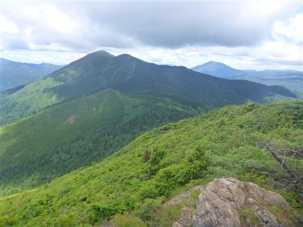
燧ヶ岳の右手には広い尾根が広がっている。
一度辿ってみたい道だ。
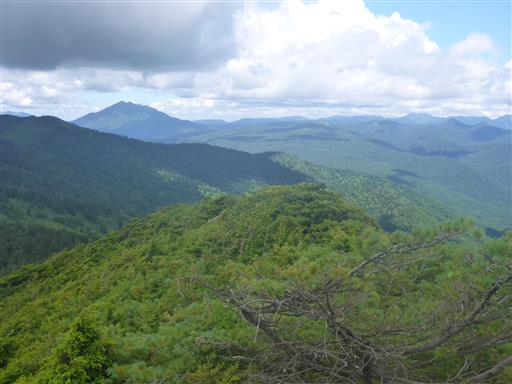
遠くに見える山頂が平らな山は苗場山、その手前左は谷川岳。
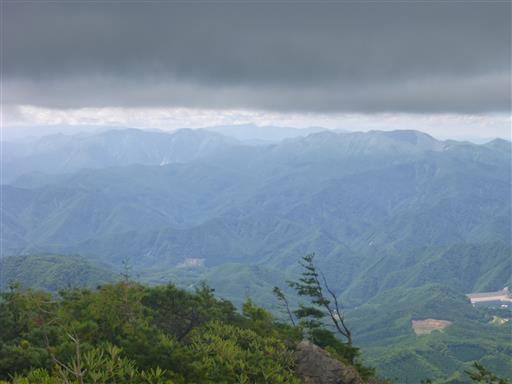
眼下には、ならまた湖。その左の木がない部分が、登山時にこちらを眺めた伐採地だ。
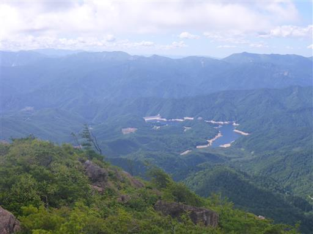
越後の山々。どこを見渡しても山また山だ。
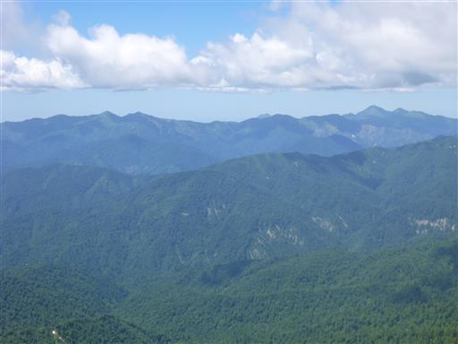
30分ほどの滞在で山頂を出発する。至仏山に雲がかかり始めている。
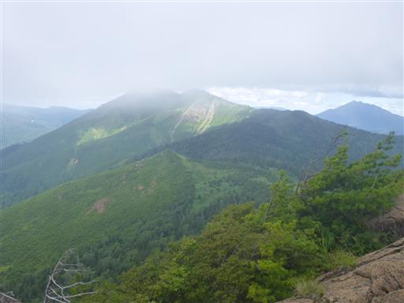
伐採地まで下山する。もう至仏山は雲の中。笠ヶ岳も山頂部はほとんど見えない。
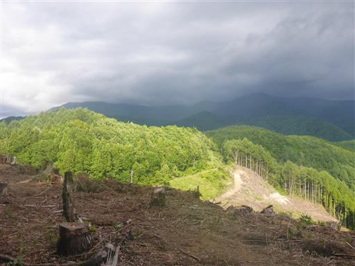
笠ヶ岳登山道入口に到着。往路には気付かなかった標識だ。
広場の奥にあり、気付く訳がない。
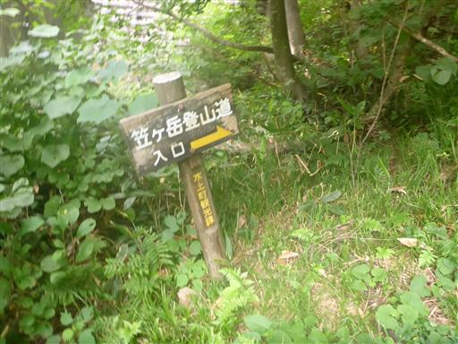
広場には丸く囲んだイスと、真ん中に薪がある。往路にはなかった薪だ。
今夜は誰かがここでキャンプファイアーをやるのだろう。
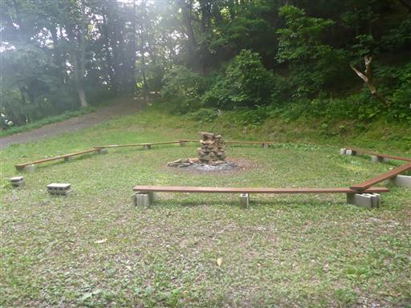
下山。
とにかく長い道だった。どこから登るにしてもアクセスも登山道も長い山で、人が少ない理由が分かった。
アップダウンが続く登山道は辛かったが、美しい池塘と片藤沼、
そして静かな山頂からの360度の展望は、辛さを上回る素晴らしいものだった。
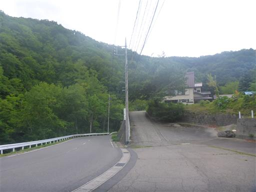